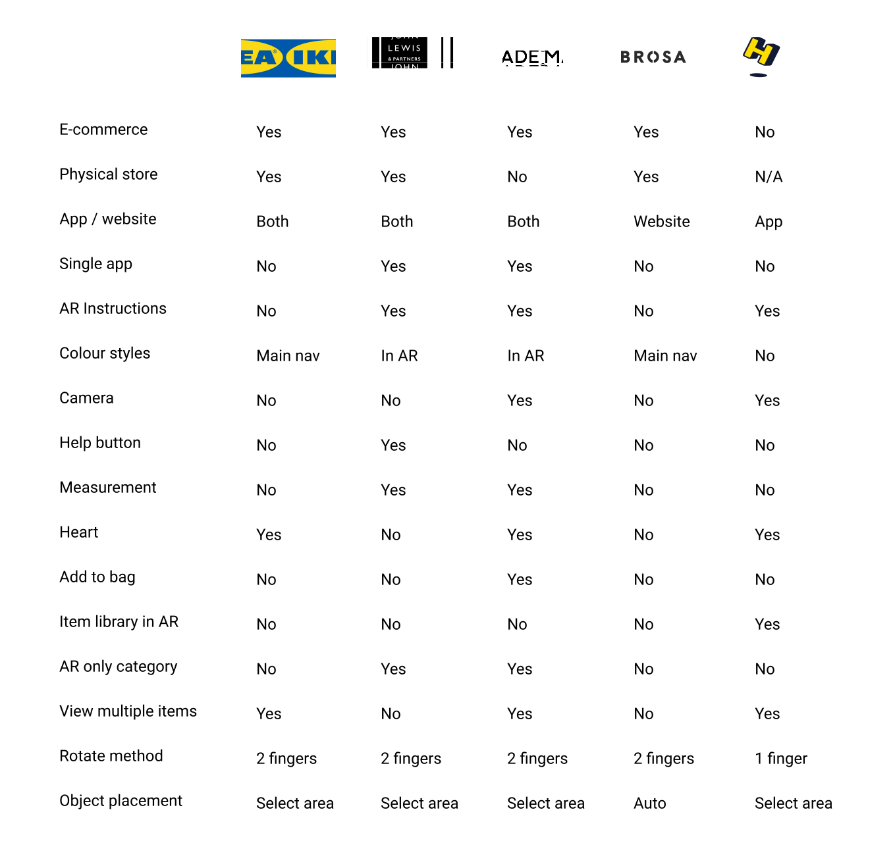
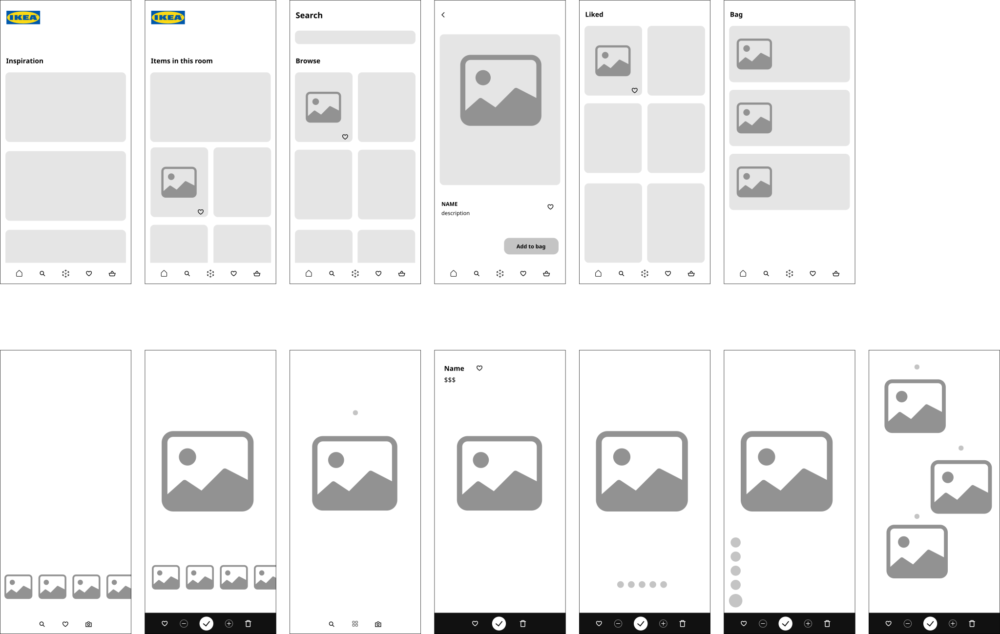
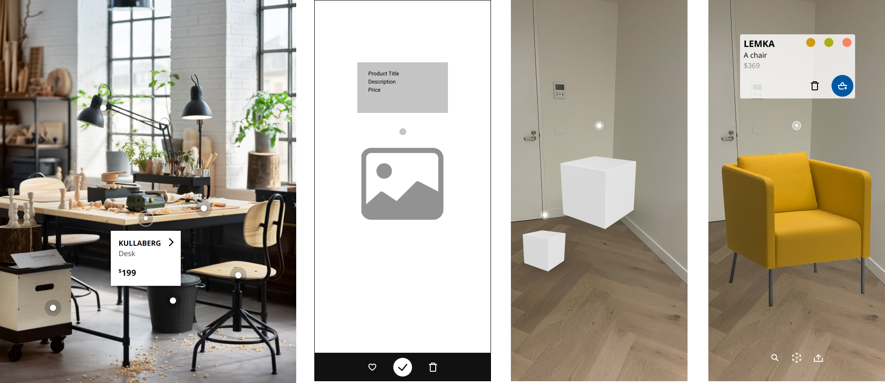
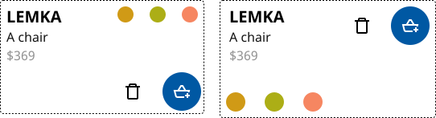

Background
With the advent of the metaverse being just around the corner, I decided I wanted to analyse a current use of augmented reality and see how I could make it more user-friendly.
I turned my attention to the IKEA Place app, which although a great idea (allowing one to place furniture inside a room to see how it looks), appeared to suffer from some not-so-great UX decisions.
The challenge
To improve the AR experience for the user whilst also increasing the return on investment for the company.
Discovery
I conducted user surveys, interviews and usability tests to discover what users pain points were as well as their motivations for using the app.
The three main pain points were:
Further research looking into the app reviews mirrored the navigation issue with many reviewers mentioning the lack of a search bar as well as a lack of available furniture.

I then conducted a competitor analysis to see what others in the AR furniture space were doing with their interfaces. It made sense that MADE has the most AR features available as it does not have a physical store.
Both MADE and John Lewis provide the AR experience together with their normal e-commerce apps with a devoted section for AR viewable furniture, whereas IKEA has two separate apps.

Define
Using all the research I collated, I then formed user personas, user empathy maps, and user journey maps. These served as a reference for my design phase later on. It also helped me decide on which features to include in my design that would elevate the customer experience.

Ultimately, I decided to combine two apps and merge them into one. My reason for this was due to conversion rate being interrupted as soon as the user left the app to either visit the the website or the IKEA shopping app. It also allows for one less application being needed both by the consumer and the company.
Design
When designing the lo-fi wireframes, rather than have an open camera screen be the homescreen of the app, which might be disconcerting to some people, I resolved to put the focus on the e-commerce aspect with the inspriration section being the first screen users see.
For AR interactivity, I wanted to eliminate the issue of navigating away from the AR screen to add a new item. Ensuring that the user could access everything they needed on each screen type without navigating to to the other was essential to mitigate cognitive load.

Once I was content with my wireframes, I created a design system based on IKEA's current one that is found on the e-commerce app and the website, instead of the Place app. With this design system I created components that could be reused throughout each frame of the app. I also made them interactive so that I could have less frames needed for my final user flow.
For the AR interface aesthetics I imitated the carousel menu for saved items commonplace on snapchat and instagram but also IKEAs own 'recently viewed items'. I opted for the AR logo to be the icon to access this as a heart could be confused for liking/unliking an item.

I incorporated an element from the ikea website that showcases multiple products in a picture when designing the interaction for multiple items. I added both a trash icon, options to change the colour, and an 'Add to bag' CTA button to the overlay that appears when pressing the radio button.

Results
Upon getting user feedback from usability tests, I found that 100% of participants preferred my design.
They valued the:
Feedback for improvements to the app were to include a notification symbol that the user had items in their bag and to provide instructions on how to use the app.
For this first version of the app I wanted to ensure the usability was validated before committing to creating a tutorial animation.
A/B tests on the navigation bar icons resulted in an upload icon being used versus a camera icon for sharing the AR creation. I plan to add a choice between a photo and video option for users in future iterations.
While changing over the icons I took another look over my design and edited the product information overlay. Although the first ideation worked for a product with only three colours options, it didn't give opportunities for more colours. I moved the colour options to the bottom of the overlay in a carousel. I also increased the size of the touch targets and spacing so users wouldn't have issues selecting colours.
